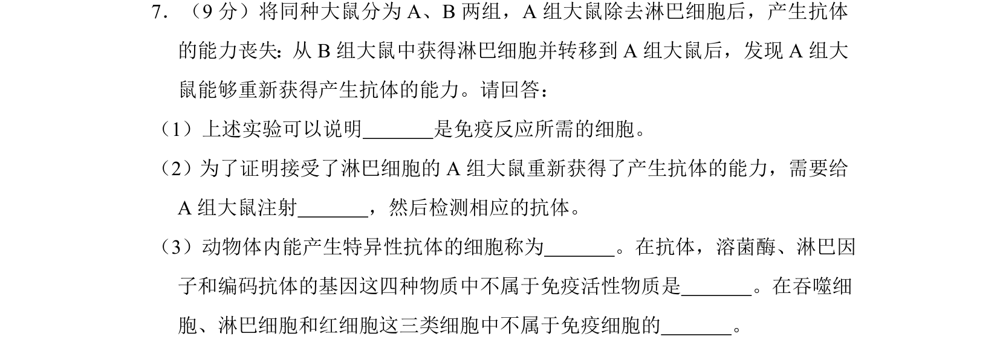
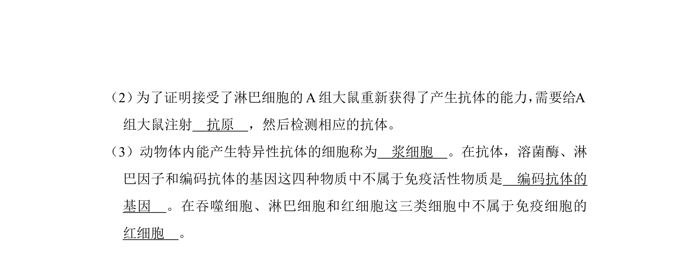
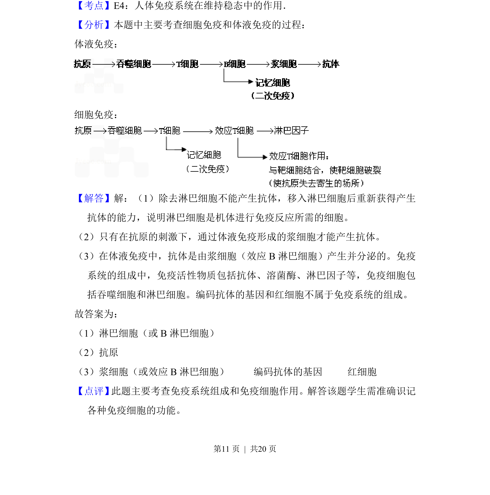

2010-新课标-07
考点：免疫反应 特异性免疫 淋巴细胞 免疫活性物质
题面


摘要
该题通过大鼠淋巴细胞转移实验，考查免疫细胞功能、抗体产生及免疫活性物质的判断。
关联考点
答案与解析


📄 原 PDF 第 10 页：
素材/真题/吉林/2008-2024·（吉林）生物高考真题/2010年高考生物试卷（新课标）（解析卷）.pdf
题干文本
7．（9分）将同种大鼠分为A、B两组，A组大鼠除去淋巴细胞后，产生抗体 的能力丧失：从B组大鼠中获得淋巴细胞并转移到A组大鼠后，发现A组大 鼠能够重新获得产生抗体的能力。请回答： （1）上述实验可以说明 淋巴细胞 是免疫反应所需的细胞。